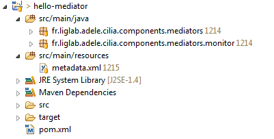
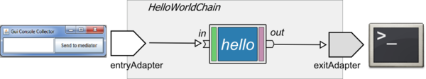
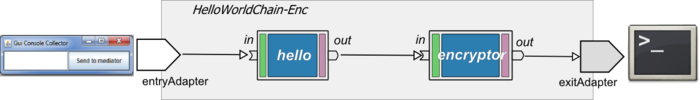
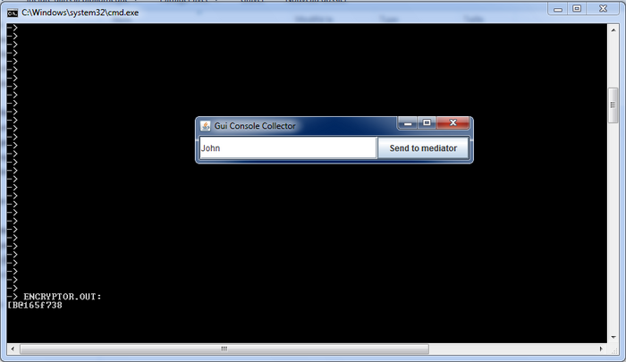
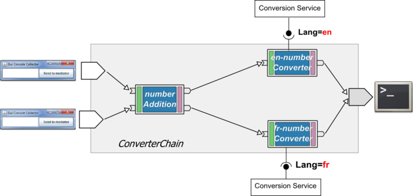

Creating a new project
For building Cilia projects we use the Apache Maven project management software. Maven compiles the Java code, adds the appropriated metadata to the components and creates OSGi standard bundles (jar files). To have an idea about Maven you can follow the Maven in 5 minutes tutorial.
Project Structure
A Cilia project should follow this structure :
**src/java**: java sources files of the project. **src/resources/metadata.xml** : Cilia descriptor file. **pom.xml** : maven script file.
A sample project structures is shown in next image:

Sample Maven Script File
This file is used to describe the project, information to be used is:
- identification : project name, version, type of packaging, etc.
- repository : repository of artifacts to be used in compilation task.
- dependencies : project dependencies, in Cilia project dependencies in Cilia Core and Cilia runtime are used suddenly.
- build: the target platform of Cilia is OSGi, then the build process includes the maven-bundle-plugin and the maven-ipojo-plugin like they are used in this sample pom file.
<project>
<modelVersion>4.0.0</modelVersion>
<!-- Project Identification -->
<groupId>fr.liglab.adele.cilia</groupId>
<artifactId>hello-mediator</artifactId>
<version>1.0.0-SNAPSHOT</version>
<packaging>bundle</packaging>
<name>Hello Mediator</name>
<!-- Repositories List -->
<repositories>
<repository>
<id>maven-cilia-repository-release</id>
<name>Cilia - Release</name>
<url>http://repository-cilia.forge.cloudbees.com/release/</url>
<layout>default</layout>
</repository>
<repository>
<id>maven-cilia-repository-snapshot</id>
<name>Cilia - Snapshot</name>
<url>http://repository-cilia.forge.cloudbees.com/snapshot/</url>
<layout>default</layout>
</repository>
</repositories>
<!-- Dependencies Description-->
<dependencies>
<dependency>
<groupId>fr.liglab.adele.cilia</groupId>
<artifactId>cilia-core</artifactId>
<version>1.7.4</version>
</dependency>
<dependency>
<groupId>fr.liglab.adele.cilia</groupId>
<artifactId>cilia-runtime</artifactId>
<version>1.7.4</version>
</dependency>
</dependencies>
<!-- Build Description-->
<build>
<plugins>
<plugin>
<groupId>org.apache.felix</groupId>
<artifactId>maven-bundle-plugin</artifactId>
<version>1.4.3</version>
<extensions>true</extensions>
<configuration>
<instructions>
<Bundle-SymbolicName>${pom.artifactId}</Bundle-SymbolicName>
<Private-Package>fr.liglab.adele.cilia.components.mediators,fr.liglab.adele.cilia.components.mediators.monitor</Private-Package>
</instructions>
</configuration>
</plugin>
<plugin>
<groupId>org.apache.felix</groupId>
<artifactId>maven-ipojo-plugin</artifactId>
<version>1.6.0</version>
<executions>
<execution>
<goals>
<goal>ipojo-bundle</goal>
</goals>
</execution>
</executions>
</plugin>
</plugins>
</build>
</project>
Project Build
To build a Cilia project with maven use this command in a OS console:
mvn clean install
You can also use a pluging for your IDE as M2Eclipse.
Hello World Sample
In this lesson, you will manipulate Cilia mediation chains. We will extend the Hello Mediator example to add other mediators to the chain. In addition, we will study other capabilities of mediators and bindings.
Overview
The goal of this section it to create a simple mediation chain with only one mediator i.e. the “Hello World” mediator. The mediator receives an input string from a GUI and displays and “Hello, …” message into the standard output console.

Mediator Implementation
A mediator is composed of three elements: processor, scheduler and dispatcher (for an detailed explanation see the Cilia Overview). In this subsection, for the Hello World mediator we will present its elements, then the mediator description and finally the mediation build process.
Processor
The processor of the Hello Mediator takes the data received by the mediator, next it extracts the content of this data (a string in this case), then it adds the text “hello, ” to this string, and finally it sends the data to the next mediator. The Java class implementation corresponding to this processor is as follows:
package fr.liglab.adele.cilia.components.mediators;
import fr.liglab.adele.cilia.Data;
/**
* The Hello World Processor Class
*
*/
public class HelloProcessor {
/**
* Method modifying the received data
*
* @param data The processor received data
* @return The data with "Hello, " prefix
*/
public Data sayHello(Data data) {
if (data != null) {
data.setContent("Hello, " + data.getContent().toString());
}
return data;
}
}
Each element in Cilia must be described using the Cilia DSL language. In this description is provided information about the class implementing the processor, the method used to treat the data, and the data type used to transport information (by default is fr.liglab.adele.cilia.Data).
This description is realized as follows:
<processor name="HelloProcessor" classname="fr.liglab.adele.cilia.components.mediators.HelloProcessor"> <cilia:method name="sayHello" data.type="fr.liglab.adele.cilia.Data" /> </processor>
Scheduler and Dispatcher
A set of prebuilt Schedulers and Dispatchers are available into the Cilia compendium distribution. For this mediator we will use the Immediate Scheduler (the data is passed to the processor when they are received by the scheduler) and the Multicast Dispatcher (the data is passed to the all next mediators).
Mediator Description
The mediator is described into the Cilia DSL language. The description indicates each element forming the mediator (scheduler, processor and dispatcher). The description file is a follows:
<mediator-component name="HelloMediator" category="samples">
<cilia:processor name="HelloProcessor" />
<cilia:scheduler name="immediate-scheduler" />
<cilia:dispatcher name="multicast-dispatcher" />
<ports>
<in-port name="unique" type="*" />
<out-port name="unique" type="*" />
</ports>
</mediator-component>
Build (Compilation and Packaging)
For build process we use Maven as presented in previously. To launch the build of this project the command “mvn clean install” must be executed in an OS console.
If the build process ends successfully the bundle hello-mediator-1.0.0-SNAPSHOT.jar must be in the target directory of the project.
Mediator Deployment
Mediator deployment is simple, it consists only in copying the file produced by maven (hello-mediator-1.0.0-SNAPSHOT.jar) into the applications directory of the installed platform. Indeed, mediator bundles are compliant OSGi bundle, it can be installed using provided capabilities by the installed platform. In our case, we have installed a Felix platform with the FileInstall extension, it allows the automatic deployment of bundles only putting files into a specific directory (e.g. the applications directory).
Hello World Chain
Chain Description
Once the mediators created a chain can be created using instances of these mediators. We will create a chain having only one instance of the Hello World mediator presented above.
A Cilia chain descriptor has three sections: adapters, mediators and bindings. Adapters section defines the entry and exit points of a mediation chain, these points are represented by adapters instances. In our Hello World example, we have utilized two existing adapters; the gui-adapter allowing take data from a GUI and the console-adapter allowing send data to the standard output (cilia console). In mediators section we define and configure the instance of our HelloWord mediator. Finally in bindings sections, the entryAdapter is bound to hello mediator (data taken by the GUI Adapter is sent to the mediator) and the hello mediator is bound to the console adapter (data produced by the hello mediator is sent to the console).
The Hello World chain is described as follows:
<cilia>
<chain id="HelloWorldChain">
<!-- Adapters instances definition -->
<adapters>
<adapter-instance type="gui-adapter" id="entryAdapter" />
<adapter-instance type="console-adapter" id="exitAdapter" />
</adapters>
<!-- Mediators instances definition -->
<mediators>
<mediator-instance type="HelloMediator" id="hello" />
</mediators>
<!-- Bindings definition -->
<bindings>
<binding from="entryAdapter:unique" to="hello:unique" />
<binding from="hello:unique" to="exitAdapter:unique" />
</bindings>
</chain>
</cilia>
In a chain description a unique id attributed must be defined to identify the chain, in our sample the chain id is HelloWorldChain. In mediators section an instance of the mediator HelloMediator has been described, the id attribute for each instance must be specified, our instance is called hello. The instances ports must be also be defined, the hello instance has a input port in and an ouput port out.
A graphical representation of the Hello World chain is shown in the next figure:
Chain Deployment
The deployment of the chain is similar to a mediator deployment. In this case, the file describing the chain (a XML document having as extension dscilia) is placed into the applications directory of the platform. The Cilia runtime takes in account this kind of files, it processes the file creating the instance indicated into the file and finally the defined bindings. As result, the user have a GUI window used to enter text, and when it push the Send Data button the information is sent to the hello mediator that process them and next deliver the data to the standard console, that shows the greeting message.
Developing Mediators
In this lesson, you will manipulate Cilia mediation chains. We will extend the Hello Mediator example to add other mediators to the chain. In addition, we will study other capabilities of mediators and bindings.
Adding a new Mediator (Encryptor)
This example will add a new mediator to our Hello World example. This new Mediator takes the data produced by the Hello Mediator instance and encrypts them. The data produced by the Encryptor mediator is sent to the standard output (console) in the same way that the Hello World Chain did.
To do that, we have to modify the mediation chain as follow:

Encryptor Mediator Implementation
Processor Definition
The Encryptor class implements the processor of the Mediator. It takes the data content and then applies a DES encryption.
package fr.liglab.adele.cilia.components.mediators;
import fr.liglab.adele.cilia.Data;
/**
* Data Encryption with DES
*
*/
public class Encryptor {
/**
* Encrypts data content
* @param data
* @return
*/
public Data process(Data data) {
if (data != null) {
String strToEncrypt = (String)data.getContent();
byte[] temp = SimpleChiper.getInstance().encrypt(strToEncrypt);
data.setContent(temp);
}
return data;
}
}
The processor description is as follows:
<processor name="EncryptorProcessor" classname="fr.liglab.adele.cilia.components.mediators.Encryptor">
<cilia:method name="process" data.type="fr.liglab.adele.cilia.Data" />
</processor>
Mediator Description
In this mediator we use also the immmediate scheduler and the multicast dispatcher.
<mediator-component name="EncryptorMediator" category="samples">
<cilia:processor name="EncryptorProcessor" />
<cilia:scheduler name="immediate-scheduler" />
<cilia:dispatcher name="multicast-dispatcher" />
<ports>
<in-port name="unique" type="*" />
<out-port name="unique" type="*" />
</ports>
</mediator-component>
Chain Description
<cilia>
<chain id="HelloWorldChain-Enc">
<!-- Adapters instances definition -->
<adapters>
<adapter-instance type="gui-adapter" id="entryAdapter" />
<adapter-instance type="console-adapter" id="exitAdapter">
<property name="console.header" value="ENCRYPTOR.OUT:" />
</adapter-instance>
</adapters>
<!-- Mediators instances definition -->
<mediators>
<mediator-instance type="HelloMediator" id="hello"/>
<mediator-instance type="EncryptorMediator" id="encryptor"/>
</mediators>
<!-- Bindings definition -->
<bindings>
<binding from="entryAdapter:unique" to="hello:unique" />
<binding from="hello:unique" to="encryptor:unique" />
<binding from="encryptor:unique" to="exitAdapter:unique" />
</bindings>
</chain>
</cilia>
In the new architecture, an instance (e.g. encryptor) of the Encrypto Mediator is created. We use direct binding to connect the hello and encryptor mediators instances. Finally, we have defined the binding sending to the console (using the exitAdapter) from the encryptor. In this new architecture, the exitAdapter adapter instance has been configured to print out a header message before the print out the data.
A graphical representation of the chain is shown in the next figure:
Hello-Encryption Chain Execution
A window is presented, type an arbitrary text, into the console an incomprehensible message is shown.

Developing a Scheduler and a Dispatcher
In a previous lesson we have learned how to use different kind of schedulers to modify the behavior of mediators. In this lesson we will learn how to create new kinds of schedulers and dispatchers to obtain a special behavior when it does not exist in the Cilia available components.
Chain Description
This chain has a mediator instance that waits for two numbers, when they arrive the processor makes an addition of the two numbers. Then, a routing decision is made based in the result of the addition, if the number is odd the data is dispatched using a “odd” port otherwise it is dispatched by an “even” port. With this example we will show how the scheduler and the dispatcher can change the behavior of a mediator. The synchronization task of the scheduler of the NumberAddition consists in wait for a data in each one of mediator’s ports. In addition, the Dispatcher based in content of the message (odd or even) must decide where send the data.

We will focus on the NumberAddition mediator since the other mediator type NumberConverter mediator was presented in the previous trail.
Implementating a Cilia Scheduler
In Cilia, a Scheduler implementation class should extend the CiliaScheduler class (provided by the framework). The method notifyData will be invoked by the Cilia framework each time that a Data arrives to a mediator’s port. In this method must be implemented the data synchronization logic. In addition, the scheduler implementation has the responsibility of decide when invoked the method process to indicate to Cilia framework that Data is ready to be processed.
In this example we will implement a Scheduler that waits for a Data in each mediator port, and then triggers the data processing. The class implementing the Scheduler is the WaitAllScheduler class, the code source is as follow:
/**
* This class implements an scheduler that waits for a data in each one of mediator's ports.
*
*/
public class WaitAllScheduler extends AbstractScheduler {
private Map<String, Data> dataMap = new HashMap<String, Data>();
@Override
public void notifyData(Data data) {
// Determines the source port of the arriving data
String currentPort = data.getSource();
dataMap.put(currentPort, data);
boolean dataInAllOthersPorts = true;
for (String portName : dataMap.keySet()) {
if (!portName.equals(currentPort)) {
Data portData = dataMap.get(portName);
dataInAllOthersPorts = dataInAllOthersPorts && (portData != null);
}
}
// If there is a data in each port of the mediator the process method is invoked.
if (dataInAllOthersPorts) {
List<Data> dataToProcess = null;
dataToProcess = new ArrayList<Data>(dataMap.values());
initDataMap();
process(dataToProcess); // Data processing triggering
}
}
}
The description of the Scheduler is similar to the description of a processor, the name of the scheduler must be indicated and also the class implementing it, the namespace is an optional attribute.
<scheduler name="wait-all-scheduler" classname="cilia.examples.scheduler.WaitAllScheduler" namespace="fr.liglab.adele.cilia"> </scheduler>
Implementating a Cilia Dispatcher
In this example we will implement a Dispatcher that observes the data content, if it’s a odd number it send the data by the “odd” port otherwise it send the data by the “even” port. The class implementing the Dispatcher is the NumberDispatcher class, the code source is as follow:
/**
* Dispatcher implementation based in the data content (odd or even numbers)
*/
public class NumberDispatcher extends AbstractDispatcher {
/**
* Name of port used to send the odd number
*/
private String oddPort;
/**
* Name of port used to send the even number
*/
private String evenPort;
@Override
public void dispatch(Data data) throws CiliaException {
String content = (String) data.getContent();
long number = Long.parseLong(content);
if (number % 2 == 0) {
send(oddPort, data); //Sending data using the odd port
} else {
send(evenPort, data); // Sending data using the even port
}
}
}
The description of the Dispatcher is similar to the description of a processor, the name of the scheduler must be indicated and also the class implementing it, the namespace is an optional attribute.
The ports used to send the numbers in the dispatcher must be indicated to the implementation class. Consequently, two properties have been defined: oddPort and evenPort, these properties will be set when the mediation chain is defined, their default values are odd and even respectively.
<dispatcher name="odd-even-dispatcher" classname="cilia.examples.dispatcher.NumberDispatcher" namespace="fr.liglab.adele.cilia">
<properties>
<property name="oddPort" field="oddPort" value="odd" />
<property name="evenPort" field="evenPort" value="even" />
</properties>
</dispatcher>
Mediator Implementation
Processor Implementation
This processor takes a List of Data (each data contains a long number) and calculates the addition of the elements of the list. The source code is a follow:
/**
* This processor takes two numbers (long) as parameter and returns the addition of them.
*/
public class NumberAddition {
/**
* The process method
* @param list List containing two numbers.
* @return a list containing a Data with the result
*/
public List<Data> process (List<Data> list) {
long result = 0;
for (Data data : list) {
String content = (String)data.getContent();
Long number = null;
try {
number = Long.decode(content);
} catch (Exception ex) {
number = Long.valueOf(-1);
}
if (number.longValue() < 0) {
return null;
}
result += number;
}
// List creation
List<Data> newList = new ArrayList<Data>();
newList.add(new Data(Long.toString(result)));
return newList;
}
}
The processor description indicates that it takes a java.util.List as parameter.
<processor name="NumberAdditionProcessor" classname="cilia.examples.mediator.filter.NumberAddition"> <cilia:method name="process" data.type="java.util.List" /> </processor>
Mediator Description
The mediator is created using the three elements presented above. The mediator will have a wait-all-scheduler Scheduler and an odd-even-dispatcher Dispatcher. Finally, its processor is the NumberAdditionProcessor. The description is as follow:
<mediator-component name="NumberAdditionMediator" category="samples"> <cilia:processor name="NumberAdditionProcessor" /> <cilia:scheduler name="wait-all-scheduler" /> <cilia:dispatcher name="odd-even-dispatcher" /> </mediator-component>
Chain Description
This chain receives the data from the GUI window (using the gui-console binding). Each window is connected to an input port (i1 and i2) of the NumberAddition mediator instance (m-add). Next, the m-add instance is connected to two instances of the NumberConverterMediator i.e. m-nce and m-ncf using its exit ports odd and event respectively. The odd port is bound to the m-nce instance that gets the text representation of a number in English. The even port is bound to the m-ncf instance that gets the text representation of a number in English.
The description of the chain is as follow:
<cilia>
<chain id="ConverterChain" >
<!-- Adapters instances definition -->
<adapters>
<adapter-instance type="gui-adapter" id="entryAdapter-1" />
<adapter-instance type="gui-adapter" id="entryAdapter-2" />
<adapter-instance type="console-adapter" id="exitAdapter" />
</adapters>
<!-- Mediators instances definition -->
<mediators>
<mediator-instance type="NumberAdditionMediator" id="numberAddition">
<ports>
<in-port name="in1" />
<in-port name="in2" />
<out-port name="odd" />
<out-port name="even" />
</ports>
<property name="oddPort" value="odd" />
<property name="evenPort" field="even" />
</mediator-instance>
<mediator-instance type="NumberConverterMediator" id="fr-numberConverter">
<ports>
<in-port name="in" />
<out-port name="out" />
</ports>
<property name="requires.filters">
<property name="language" value="(language=french)" />
</property>
</mediator-instance>
<mediator-instance type="NumberConverterMediator" id="en-numberConverter">
<ports>
<in-port name="in" />
<out-port name="out" />
</ports>
<property name="requires.filters">
<property name="language" value="(language=english)" />
</property>
</mediator-instance>
</mediators>
<!-- Bindings definition -->
<bindings>
<binding from="entryAdapter-1" to="numberAddition:in1" />
<binding from="entryAdapter-2" to="numberAddition:in2" />
<binding from="numberAddition:odd" to="fr-numberConverter:in" />
<binding from="numberAddition:even" to="en-numberConverter:in" />
<binding from="fr-numberConverter:out" to="exitAdapter" />
<binding from="en-numberConverter:out" to="exitAdapter" />
</bindings>
</chain>
</cilia>